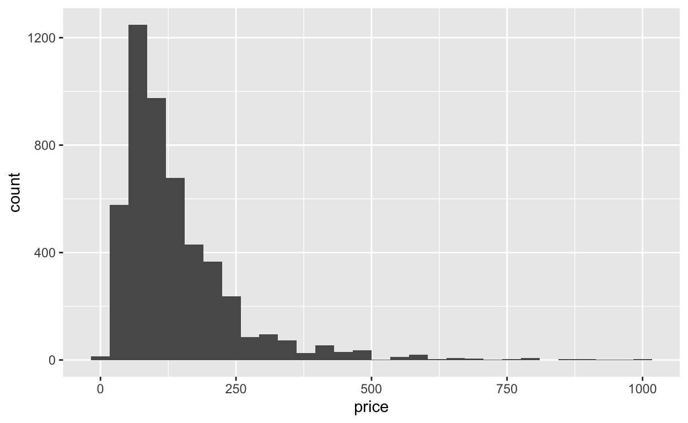
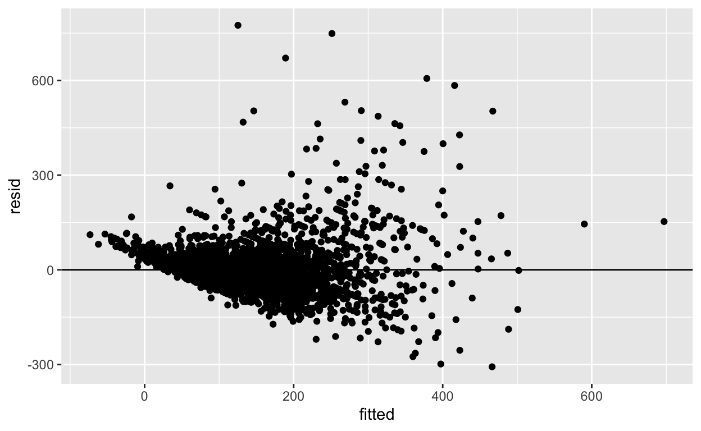
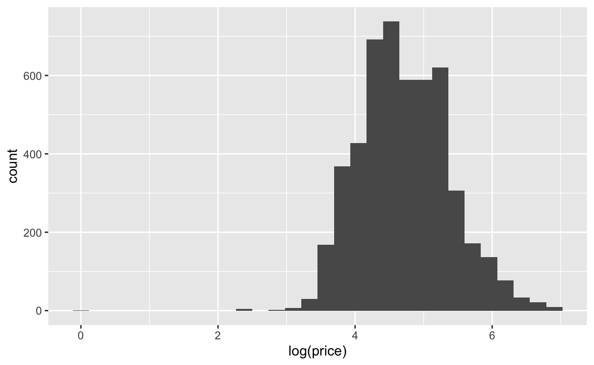
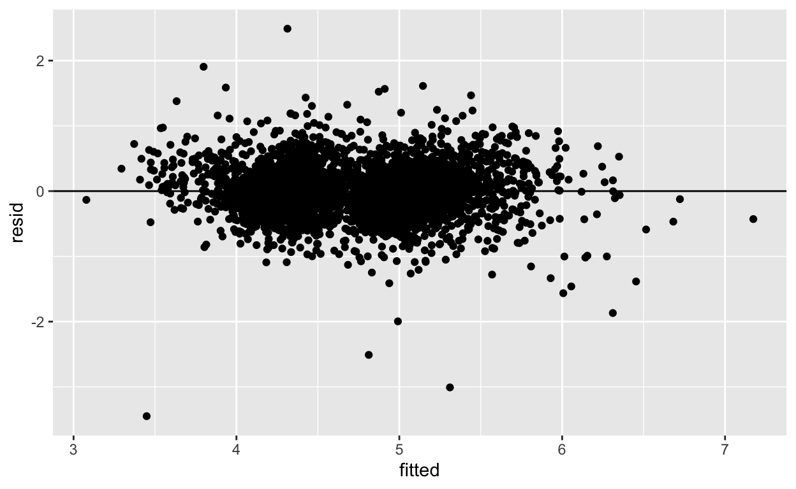
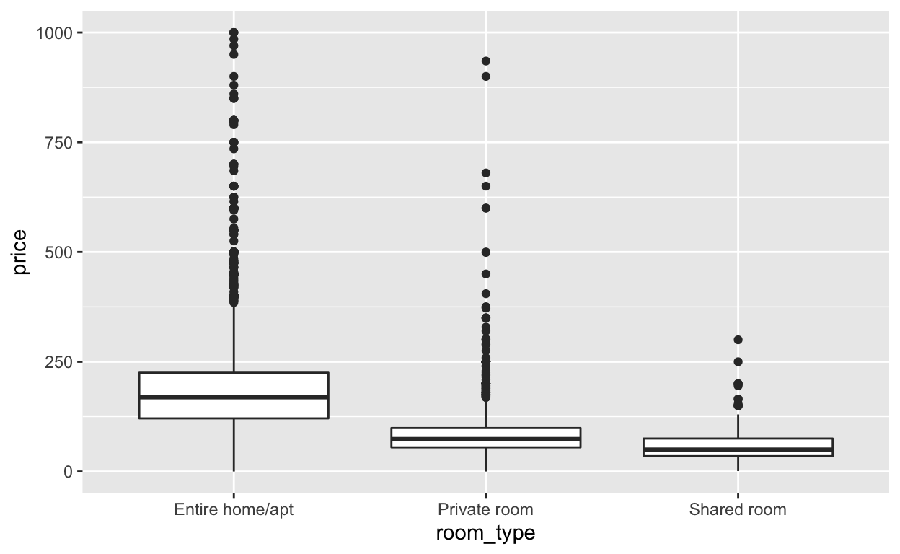
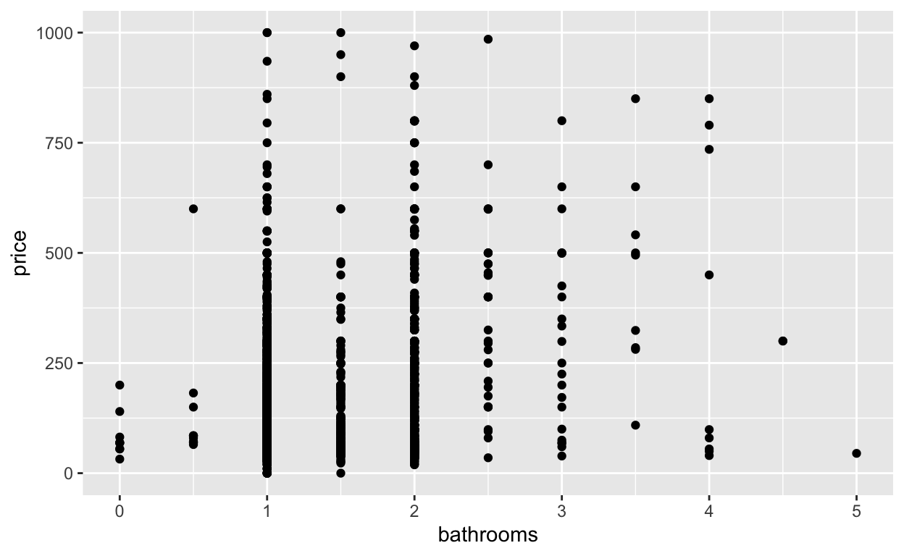
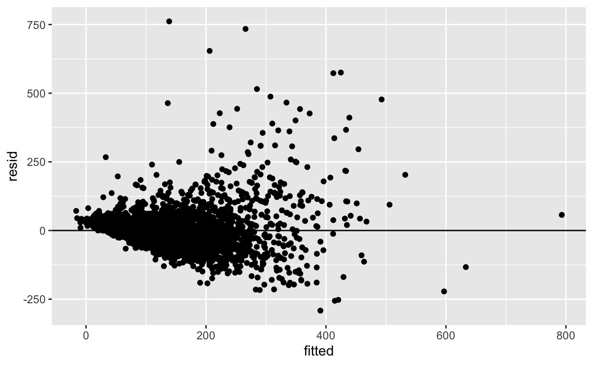

In this project, I used a Lasso model to explore influencers of price of Airbnb listing in NYC, evaluated the model, and improved it accordingly.
library(ggplot2) # for plots
library(GGally) # for pairs plots
library(ggridges) # for joy plots
library(dplyr) # for wrangling
library(caret) # for machine learning algorithms
library(stringr)
airbnb <- read.csv("https://www.macalester.edu/~ajohns24/data/NYC_airbnb_kaggle.csv")
nbhd <-read.csv("https://www.macalester.edu/~ajohns24/data/NYC_nbhd_kaggle.csv")
I used NYC Airbnb data on Kaggle, joined two datasets, selected 5000 samples, and mutated varaibles for further use.
airbnb <- airbnb %>% rename(neighbourhood=neighbourhood_cleansed)
airbnb <-airbnb %>% left_join(nbhd)
#Process the data for model input
set.seed(830)
airbnb_sub<-airbnb%>%
filter(price<=1000) %>%
select(-id,-square_feet) %>%
sample_n(5000) %>%
mutate(
noamenities = str_count(amenities, ',') +1, # count the number of amenities in each house
host_response_rate = na.pass(as.numeric(str_remove(host_response_rate,"%"))), # convert host_response_rate from string to number
host_response_time=as.factor(host_response_time), # prepare all categorical variables for the model to use
host_is_superhost=as.factor(host_is_superhost),
neighbourhood=as.factor(neighbourhood),
property_type=as.factor(property_type),
room_type=as.factor(room_type),
bed_type=as.factor(bed_type),
instant_bookable = as.factor(instant_bookable),
cancellation_policy =as.factor(cancellation_policy),
calendar_updated=as.factor(calendar_updated),
room_type=as.factor(room_type),
is_location_exact=as.factor(is_location_exact),
host_has_profile_pic=as.factor(host_has_profile_pic),
is_business_travel_ready=as.factor(is_business_travel_ready),
require_guest_profile_picture=as.factor(require_guest_profile_picture),
neighbourhood_group=as.factor(neighbourhood_group)
) %>%
select(-amenities)
ggplot(airbnb_sub,aes(x=price)) +
geom_histogram()

Above shows the distribution of listing price of Airbnb in our sample. The price of the Airbnb skews heavily to the right and a typical price for a Airbnb housing in the New York is around 125 dollars per night. The price for housing spreads out from 0 to 1000 dollars and is relatively disperse. There are probably a few outliers at the high end of the price.
To build and evaluate a predictive model of listing price, I first decide to use the LASSO model to choose the predictors I wish to include in the model since including all the variables available would generate a too complicated model for our purpose and the model tends to overfit. Lasso is chosen over the variable selection method not only because it is more computationally efficient, but also because it does not perform multiple testings when selecting the model so our results would not be overestimated.
set.seed(830)
# Perform LASSO
lasso_model <- train(
price ~ .,
data = airbnb_sub,
method = "glmnet",
tuneGrid = data.frame(alpha = 1, lambda = seq(0, 10, length = 100)),
trControl = trainControl(method = "cv", number = 10, selectionFunction = "oneSE"),
metric = "MAE",
na.action = na.omit
)
#coef(lasso_model$finalModel,lasso_model$bestTune$lambda)
I have chosen the method oneSE over best because in this case, I want to have a relatively simple model. Here, lambda equals to 5.252525. The plot showing relationship between tuning parameter and MAE shows below. As we can see, the MAE for using a tuning parameter of 5.252525 is close to the lowest MAE. Therefore, this lambda value is reasonable. The variables remained after shrinkage are longitude, room_type, accommodates, bathrooms, bedrooms, availability_30, review_scores_rating, is_business_travel_ready, reviews_per_month, noamenities, and guests_included. Note that a few categorical variables like neighborhood and neighbourhood_group are removed because not all the levels remained after the shrinkage.
I then fit a linear regression using the variables selected by the LASSO model. On average, if we apply this model to a new set of data, a typical error would be 45.40 dollars. Here, R^2 is relatively low: only 53.97% of the listing price is explained by the model. I further study the residual plot to exam if the model is wrong.
my_model <- train(
price ~ longitude+room_type + accommodates + bathrooms + bedrooms + availability_30+review_scores_rating+is_business_travel_ready+reviews_per_month+noamenities+guests_included,
data = airbnb_sub,
method = 'lm',
trControl = trainControl(method = 'cv', number = 10),
metric = "MAE",
na.action = na.omit
)
summary(my_model)
Call:
lm(formula = .outcome ~ ., data = dat)
Residuals:
Min 1Q Median 3Q Max
-307.27 -34.68 -5.84 23.35 774.77
Coefficients:
Estimate Std. Error t value Pr(>|t|)
(Intercept) -4.340e+04 2.092e+03 -20.746 < 2e-16 ***
longitude -5.864e+02 2.828e+01 -20.738 < 2e-16 ***
`room_typePrivate room` -6.581e+01 2.984e+00 -22.054 < 2e-16 ***
`room_typeShared room` -9.311e+01 7.777e+00 -11.972 < 2e-16 ***
accommodates 1.558e+01 1.062e+00 14.677 < 2e-16 ***
bathrooms 4.132e+01 3.348e+00 12.343 < 2e-16 ***
bedrooms 1.736e+01 2.321e+00 7.478 9.28e-14 ***
availability_30 1.684e+00 1.432e-01 11.760 < 2e-16 ***
review_scores_rating 7.559e-01 1.486e-01 5.086 3.84e-07 ***
is_business_travel_readyt 7.710e+00 4.522e+00 1.705 0.0883 .
reviews_per_month -3.553e+00 7.441e-01 -4.775 1.86e-06 ***
noamenities 4.576e-01 1.800e-01 2.543 0.0110 *
guests_included 5.305e+00 1.255e+00 4.227 2.42e-05 ***
---
Signif. codes: 0 '***' 0.001 '**' 0.01 '*' 0.05 '.' 0.1 ' ' 1
Residual standard error: 72.22 on 3835 degrees of freedom
Multiple R-squared: 0.5397, Adjusted R-squared: 0.5382
F-statistic: 374.7 on 12 and 3835 DF, p-value: < 2.2e-16my_model$results
intercept RMSE Rsquared MAE RMSESD RsquaredSD MAESD
1 TRUE 72.36787 0.5396401 45.40293 8.248047 0.04084573 2.843008# Combine residuals & predictions into data frame
result_df <- data.frame(resid = resid(my_model), fitted = fitted(my_model))
# Residual plot
ggplot(result_df, aes(x = fitted, y = resid)) +
geom_point() +
geom_hline(yintercept = 0)

Above shows the residual plot of a simple regression model with selected predictors. The residual plot is not ideal because it is not balanced above and below zero. We can also observe a negative trend of the residuals. The plot is also heteroskedastic: the smaller the fitted value, the smaller the residuals are. One possible reason is that our outcome price skews heavily to the right. Therefore, I even the distribution of outcome by using log(price).
Below is the graph showing distribution of log(price). As we can see, it is about symmetric and centered around 5. Using log(price) should help to generate a better model.
ggplot(airbnb_sub,aes(x=log(price))) +
geom_histogram()

log_model <- train(
logprice ~ longitude+room_type + accommodates + bathrooms + bedrooms + availability_30+review_scores_rating+is_business_travel_ready+reviews_per_month+noamenities+guests_included,
data = log_model_data,
method = 'lm',
trControl = trainControl(method = 'cv', number = 10),
metric = "MAE",
na.action = na.omit
)
log_model$results
intercept RMSE Rsquared MAE RMSESD RsquaredSD
1 TRUE 0.3860566 0.6310932 0.2914568 0.01727447 0.02462859
MAESD
1 0.01570924# Combine residuals & predictions into data frame
result_df3 <- data.frame(resid = resid(log_model), fitted = fitted(log_model))
# Residual plot
ggplot(result_df3, aes(x = fitted, y = resid)) +
geom_point() +
geom_hline(yintercept = 0)

With the log model, R^2 improved: now 63.11% of y variable is explained by the model. The residual plot also improved: the residuals are now balanced around zero and seem to be randomly distributed. The residual plot is not heteroskedastic anymore. Therefore, log model probably is a better model in predicting the price.
Through the model building process, I choose the least square regression over the KNN and GAM model because the least square model is easier to interpret. However, the GAM model is indeed better if the relationship between the outcome and predictors are nonlinear. Therefore, I build a gam model using the same predictors selected by the LASSO model. The detailed codes and results can be found in the appendix. The gam model has an MAE of 43.71 dollars and a r^2 of 56.50%, not significantly outperform the least square regression. As a result, I choose the least square model using log(price) as the outcome.
summary(log_model)
Call:
lm(formula = .outcome ~ ., data = dat)
Residuals:
Min 1Q Median 3Q Max
-3.4487 -0.2395 -0.0009 0.2234 2.4892
Coefficients:
Estimate Std. Error t value Pr(>|t|)
(Intercept) -3.024e+02 1.117e+01 -27.065 < 2e-16 ***
longitude -4.142e+00 1.510e-01 -27.427 < 2e-16 ***
`room_typePrivate room` -5.852e-01 1.593e-02 -36.739 < 2e-16 ***
`room_typeShared room` -1.016e+00 4.149e-02 -24.483 < 2e-16 ***
accommodates 7.393e-02 5.667e-03 13.046 < 2e-16 ***
bathrooms 1.080e-01 1.786e-02 6.048 1.60e-09 ***
bedrooms 5.886e-02 1.240e-02 4.746 2.15e-06 ***
availability_30 8.692e-03 7.639e-04 11.377 < 2e-16 ***
review_scores_rating 5.618e-03 7.930e-04 7.084 1.66e-12 ***
is_business_travel_readyt 3.051e-02 2.413e-02 1.264 0.206
reviews_per_month -1.623e-02 3.970e-03 -4.088 4.45e-05 ***
noamenities 3.965e-03 9.604e-04 4.129 3.73e-05 ***
guests_included 3.560e-02 6.695e-03 5.317 1.12e-07 ***
---
Signif. codes: 0 '***' 0.001 '**' 0.01 '*' 0.05 '.' 0.1 ' ' 1
Residual standard error: 0.3853 on 3832 degrees of freedom
Multiple R-squared: 0.6332, Adjusted R-squared: 0.6321
F-statistic: 551.3 on 12 and 3832 DF, p-value: < 2.2e-16 (Intercept) longitude
0.000 0.016
`room_typePrivate room` `room_typeShared room`
0.557 0.362
accommodates bathrooms
1.077 1.114
bedrooms availability_30
1.061 1.009
review_scores_rating is_business_travel_readyt
1.006 1.031
reviews_per_month noamenities
0.984 1.004
guests_included
1.036
Airbnb price is positively associated with the following factors: the number of accommodates, bathrooms, bedrooms, amenities, and guests included, as well as its availability in 30 days, whether it is ready for business travel, and the rating of review scores. Among them, the number of accommodates and bathrooms have the strongest and significant impact. With one more accommodate and bathroom, the price on average would be 1.077 and 1.114 times higher respectively, holding other variables constant.
On the other hand, longitude, private room, shared room, and reviews per month are negatively associated with price. Among them, the strongest and the most significant predictors to listing price seems to be longitude and room types. If the longitude increases by 1 degree, the price of Airbnb will, on average, be 0.016 times less, holding other variables constant. For room types, compared to entire home or apartment, if the room types are private rooms or shared rooms, the price, on average, would be 0.557 and 0.362 times lower respectively, holding other variables constant. Below is the graph picturing the relationship between room types and price. According to the box plot, it seems that private rooms and shared rooms typically are cheaper than the entire home or apartment.
ggplot(airbnb_sub,aes(y=price,x=room_type)) +
geom_boxplot()

ggplot(airbnb_sub,aes(y=price,x=bathrooms))+
geom_point()

I do notice that not all the variables have linear relationship with the outcome. For example, above is the plot showing the relationship between the number of bathrooms and the price. Clearly, this is not a linear relationship. In this case, GAM might be a better model when using to predict the outcome. Therefore, I fitted a GAM model using the same set of predictors.
#process data
gam_model_data <- airbnb_sub %>%
select(price,longitude,room_type,accommodates,bathrooms,bedrooms,availability_30,number_of_reviews,review_scores_rating,is_business_travel_ready,reviews_per_month,noamenities,guests_included)
gam_model_data <- data.frame(model.matrix(~ . - 1, gam_model_data))
gam_model <- train(
price ~ longitude+room_typeEntire.home.apt+room_typePrivate.room+room_typeShared.room+accommodates+bathrooms+bedrooms+availability_30+number_of_reviews+review_scores_rating+is_business_travel_readyt+reviews_per_month+noamenities+guests_included,
data = gam_model_data,
method = 'gamLoess',
tuneGrid = data.frame(span = seq(0.1, 1, length = 10), degree = 1),
trControl = trainControl(method = "cv", number = 10, selectionFunction = "best"),
metric = "MAE",
na.action = na.omit
)
gam_model$results %>% filter(span==gam_model$bestTune$span)
span degree RMSE Rsquared MAE RMSESD RsquaredSD MAESD
1 0.7 1 70.1644 0.5650253 43.71761 8.889075 0.05344549 3.331914With the GAM model, the R^2 is 0.565, meaning that 56.5% listing price are explained by the model; The MAE is 43.71 dollars: when we apply this model to a new set of data, we would expect the prediction to be off by 43.84 dollars. These results are not better than the least sqaure model.
# Combine residuals & predictions into data frame
result_df2 <- data.frame(resid = resid(gam_model), fitted = fitted(gam_model))
# Residual plot
ggplot(result_df2, aes(x = fitted, y = resid)) +
geom_point() +
geom_hline(yintercept = 0)

Above shows the residual plot of GAM model. The residual plot shows that this model might be wrong too since it is not balanced aroudn zero and the residuals are not random.